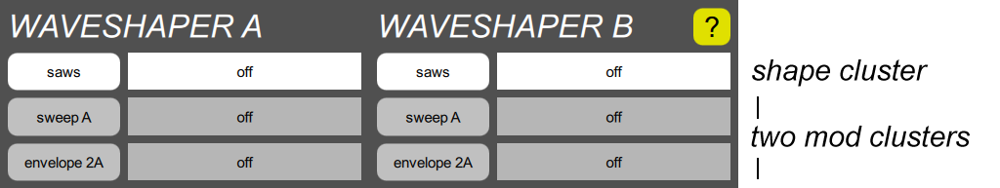

WAVESHAPER section

A waveshaper turns the frequency generated by an oscillator into a useful waveshape. WAVESHAPER A is always paired with OSCILLATOR A, and the B channel is similarly paired.
The Digital Chroma supports the same waveshapes as the original Chroma, the saws, pulse, and noise shapes, but also adds simple single-operator FM sounds, and an impulse which can be useful with a highly resonant filter. Its parameter clusters incude:
- One shape cluster. The button shows the current shape, and the slider controls the width.
- Two mod clusters. The buttons show the current mod select and the slider controls the mod depth.